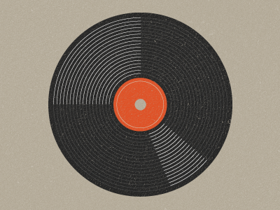

浏览器支持两种类型的渐变：线性渐变 (linear)，通过 linear-gradient 函数定义，以及 径向渐变 (radial)，通过 radial-gradient 函数定义.
径向渐变使用 radial-gradient 函数语法. 这个语法和线性渐变很类似, 除了你可以指定渐变结束时的形状 (可能时一个圆形或者一个椭圆形) 以及它的大小. 默认来说，结束形状是一个椭圆形并且和容器的大小比例保持一致。
色标
你可以像在线性渐变中一样指定色标。渐变线从起始位置向各个方向延伸.。
例子: 指定间距色标
大小
这是径向渐变和线性渐变其中的一个不同之处。 你可以用一个尺寸值来指定定义圆形或者椭圆形的大小的点. 详细请参考 尺寸常量的描述 。
例子: 椭圆的最近端
这个椭圆使用最近端的值, 这就意味着从开始点(中心点)到封闭盒子的最近端的距离来指定椭圆的尺寸。
例子: 椭圆的最远端
这个例子和之前的例子相似，除了它的大小指定为farthest-corner，渐变的尺寸为起始点到封闭盒模型最远端的起始点的距离。
例子: 圆形的最近端
这里，圆的半径是盒子高度的一半，因为顶部和底部边缘和起点和左边和右边很接近。
重复的渐变
linear-gradient 和 radial-gradient不支持自动重复的色标。然而， repeating-linear-gradient 和 repeating-radial-gradient 可以实现这个功能。
例子: 重复的线性渐变
这个例子使用 repeating-linear-gradient 创建渐变:
另一个使用 repeating-linear-gradient属性的例子。
例子: 重复的径向渐变
这个例子使用 repeating-radial-gradient 创建渐变:
黑胶例子
